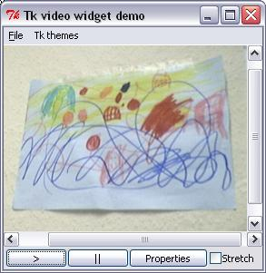

A Video widget for the Tk toolkit

This project aims to provide a video display widget for the Tk toolkit that can be used to display video data from files or from devices like webcams or TV input.
At this time the widget only works for Windows. On this platform it uses the DirectShow APIs to obtain and display video and so can support any video sources supported by DirectX.
A related project is the QuickTimeTcl project. This supports QuickTime sources (.mov files, streaming video and some devices) on the Mac and Windows.